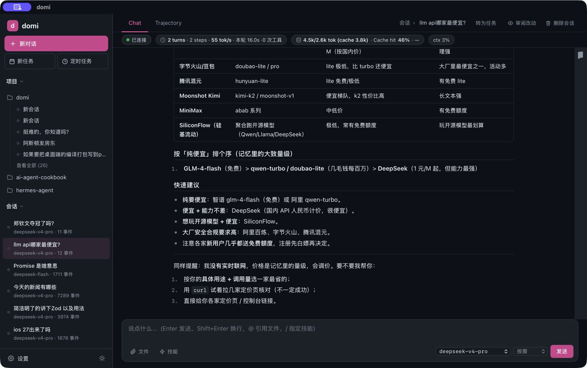

DOMI · DOCS
domi 是什么
面向第一次接触 domi 的人：它能帮你做什么、为什么能放心交给它、现在有哪些限制。 想直接上手看快速开始；想了解内部怎么工作看架构。
先说结论
- domi 是一个通用 AI Agent，正在向 personal Agent 进化。
- 它能帮你处理复杂任务：会做计划、懂编排，可中断、可恢复，每一步可跟踪、可追溯。
- 场景包括但不限于编程、设计、办公。
- 你可以定义它的人格。它在和你的相处中学习，越来越懂你。
- 数据仅存在你自己的电脑上。写文件、跑命令、联网，你放行了它才做。

它能帮你做什么
| 场景 | 例子 |
|---|---|
| 编程 | 读代码、改代码、跑测试。大一点的任务放在单独的工作区里做，你看过改动再带回原仓库 |
| 设计 | 整理需求、写设计说明、做页面原型 |
| 办公 | 整理资料、批量处理文件、写报告。接上 MCP 服务或 Skill，能用上更多工具 |
| 定时的活 | 按时间表自动跑，比如每天早上汇总一遍 |
| 长任务 | 关掉终端也接着跑；中途停了，回来接着做 |
为什么能放心交给它
会计划，懂编排
domi 先列计划，再动手。复杂任务拆成几步，按先后依赖排好再执行。做到哪一步、还剩哪几步，你随时能看到。
可中断，可恢复
- 它干活时，你可以接着打字补充要求。补充会排队，在下一步送达。
- 你可以随时叫停：Web 点「停止」，终端按
Esc。停下的只是这一轮，已经生成的内容保留。 - 出错停下后，计划和做完的部分都还在。点「继续」（或输入
/continue）就接着做。 - domi 不会替你自动重跑做了一半的操作。要不要继续，由你决定。
可跟踪，可追溯
每一步想了什么、调了什么工具、你批准了什么，都有记录。做的时候在侧栏看进度和改动；做完能回放整个过程，找到是哪一步出了问题。
可以定义人格，越来越懂你
domi 的人格是一份你能直接读、直接改的文档：
- 你可以一开始就写好它该是什么样。
- 它在和你的相处中学习。新学到的每一条都先给你看，你接受或否决（
/soul）。否决的不会再提。 - 你手改过的内容，它不会覆盖。
- 人格可以导出成一个文件，分享给别人用。
数据仅存本地，隐私无忧
- 会话、记忆、人格都存在你自己的电脑上，只发给你配置的模型。
- 写文件、跑命令、联网、用外部工具，你放行了它才做。
- 你可以选每次都问、按规则问，或者全部放行（
/mode）。
模型随你选
OpenAI、Anthropic、DeepSeek、Gemini，本地模型（Ollama），或者网关（LiteLLM、OpenRouter）。对话中途也能换（/model）。
在哪儿用
| 入口 | 适合 | 现在怎么用 |
|---|---|---|
| 终端 | 习惯命令行、远程机器上 | 下载二进制，输入 domi |
| Web | 想要完整界面、看改动和进度 | 从源码运行 |
| 桌面应用 | macOS 上当普通应用用 | 从源码构建 |
三个入口看到的是同一批会话。在终端开始的事，可以在 Web 里接着看。
已知限制
- 目前安装和使用需要会用终端；支持 macOS 和 Linux，Windows 请用 WSL。
- Web 和桌面端还要从源码运行，计划改成下载就能用。
- 还不能直接操作浏览器和桌面应用。设计、办公类任务目前靠读写文件、跑命令、MCP 和 Skill 完成。
- macOS 二进制还没有签名，第一次运行前要解除隔离（见快速开始）。